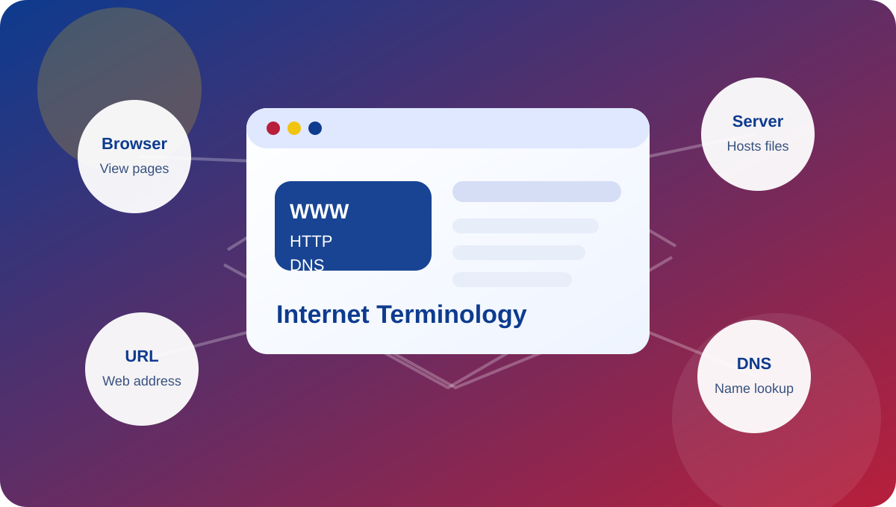

Internet Terminology Website
This website introduces important internet and web application terms in a simple, organized, and easy-to-read format. Each page explains one concept using its definition, role, and analogy so the ideas are easier to understand and remember.

Explore All Topics
World Wide Web (WWW)
Learn how the web connects documents and resources across the internet.
TCP/IP
Understand the protocol suite that allows devices to communicate reliably.
Web Browser
See how browsers request, interpret, and display web pages.
Web Server
Discover how servers host websites and deliver resources to users.
URL
Find out how web addresses identify and locate specific resources.
DNS
Explore how domain names are translated into IP addresses.
HTTP
Read about the protocol used to transfer web data between clients and servers.
Intranet
Understand the purpose of private internal organizational networks.
Extranet
See how organizations securely extend limited access to external users.
Multitier Architecture
Learn how applications are separated into presentation, logic, and data layers.
FTP
Review how files are transferred between computers over a network.
HTML
Understand the markup language used to structure web pages.
Web 1.0
Look back at the early static, read-only web.
Web 2.0
Explore the interactive web where users create and share content.
Web 3.0
Read about the decentralized and intelligent web focused on data ownership.
Web 4.0
See the next stage of the web with AI and real-time interaction.
Website vs Web Application
Compare information-focused websites with task-focused web applications.
Parts of a URL
Break down the protocol, domain, path, and query in a URL.
HTTP Request-Response Cycle
Follow the steps that happen when a browser requests a web page.